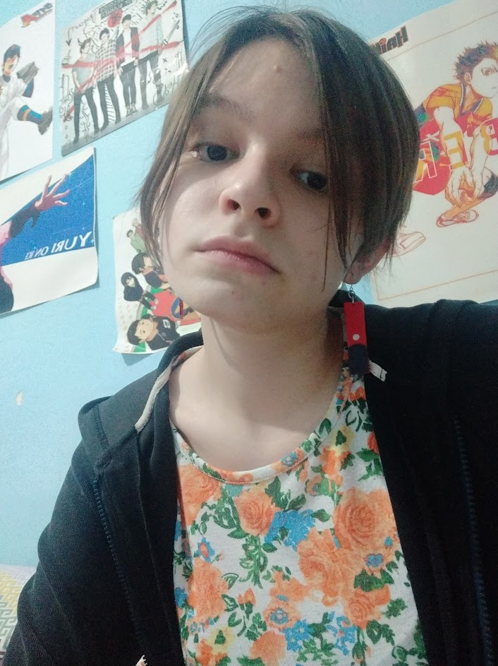

Portfolio personal

Bienvenidos a mi portfolio
Mi nombre es Lucía Pascua y actualmente soy estudiante de la carrera de Producción de Videojuegos y Entretenimiento Digital
Algunas cosas que me gustan son:
- Dibujar
- Leer
- Juegos RPG, visual novel y algunos shooters
Los artistas de los que me inspiro para crear mi estilo de dibujo son: